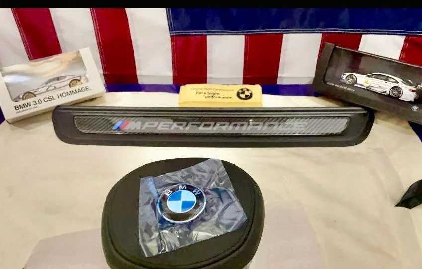

Volante G en cabina F · X6
La misma cabina, antes y después.
Retrofit de demostración de los fundadores: el X6 con el que IMPARE estudia el cambio de G a F. No es un trabajo para un cliente.


Arrastra para comparar, o usa las flechas del teclado sobre el control.
El auto
Un BMW X6 de generación F, con su volante original, su cabina y su cuadro analógico.
El problema
El volante de generación G no habla con la cabina F sin un adaptador: el cambio no era la pieza, era el conector.
El adaptador
El adaptador se compró en Europa, después de estudiar qué aplicación era la correcta para ese auto.
La comprobación
La instalación se hizo con el auto presente, probando cada función, y el volante encaja y se siente como si siempre hubiera estado ahí.


Datos
- AutoBMW X6 · generación F
- VolanteM Competition · generación G · piel, de M3/M4 (G80/G82)
- AcabadoPiel, botones M1 / M2, carbono
- AdaptadorComprado en Europa
- InstalaciónReversible cuando el auto lo permite
- EvaluaciónCada vehículo por separado
Por confirmar
- Funciones verificadas en la instalaciónPor confirmar
- Botones M1 / M2En carros que no son M, los botones M1 y M2 son parte del diseño: no activan modos M.
- Adaptación a otros modelos FPor estudiar, caso por caso
Un volante de generación G, adaptado a una cabina de generación F con un adaptador estudiado para esa aplicación. Cada vehículo se evalúa por separado: modelo, año, equipamiento y funciones. En carros que no son M, los botones M1 y M2 son parte del diseño: no activan modos M. El umbral M Performance de carbono también está en Collection.